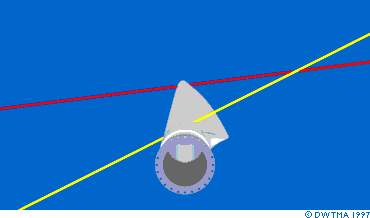
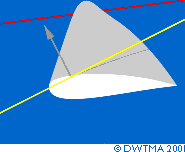

Rotor Blades

Changing
the Wind Speed Changes Wind Direction Relative to the Rotor Blade
In this next picture we have taken one rotor blade from the previous
page off its hub, and we look from the hub towards the tip, at
the back side (the lee side) of the rotor blade. The wind in
the landscape blows between, say 8 m/s and 16 m/s (from the bottom
of the picture), while the tip of the blade rotates towards the
left side of the picture.
 In the picture you can see how the angle
of attack of the wind changes much more dramatically at the root
of the blade (yellow line) than at the tip of the blade (red
line), as the wind changes. If the wind becomes powerful enough
to make the blade stall, it will start
stalling at the root of the blade.
In the picture you can see how the angle
of attack of the wind changes much more dramatically at the root
of the blade (yellow line) than at the tip of the blade (red
line), as the wind changes. If the wind becomes powerful enough
to make the blade stall, it will start
stalling at the root of the blade.
Lift
Direction
 Now, let us cut the
rotor blade at the point with the yellow line. In the next picture
the grey arrow shows the direction of the lift
at this point. The lift is perpendicular to the direction of
the wind. As you can see, the lift pulls the blade partly in
the direction we want, i.e. to the left. It also bends the rotor
blade somewhat, however.
Now, let us cut the
rotor blade at the point with the yellow line. In the next picture
the grey arrow shows the direction of the lift
at this point. The lift is perpendicular to the direction of
the wind. As you can see, the lift pulls the blade partly in
the direction we want, i.e. to the left. It also bends the rotor
blade somewhat, however.
Rotor
Blade Profiles (Cross Sections)
As you can see, wind turbine rotor blades look a lot like the
wings of an aircraft. In fact, rotor blade designers often use
classical aircraft wing profiles as cross sections in the outermost
part of the blade.
 The thick profiles in the innermost part
of the blade, however, are usually designed specifically for
wind turbines. Choosing profiles for rotor blades involves a
number of compromises including reliable lift and stall characteristics,
and the profile's ability to perform well even if there is some
dirt on the surface (which may be a problem in areas where there
is little rain).
The thick profiles in the innermost part
of the blade, however, are usually designed specifically for
wind turbines. Choosing profiles for rotor blades involves a
number of compromises including reliable lift and stall characteristics,
and the profile's ability to perform well even if there is some
dirt on the surface (which may be a problem in areas where there
is little rain).
Rotor
Blade Materials
Most modern rotor blades on large wind turbines are made of glass
fibre reinforced plastics, (GRP), i.e. glass fibre reinforced
polyester or epoxy.
 Using carbon fibre or aramid (Kevlar) as
reinforcing material is another possibility, but usually such
blades are uneconomic for large turbines.
Using carbon fibre or aramid (Kevlar) as
reinforcing material is another possibility, but usually such
blades are uneconomic for large turbines.
 Wood, wood-epoxy, or wood-fibre-epoxy composites
have not penetrated the market for rotor blades, although there
is still development going on in this area. Steel and aluminium
alloys have problems of weight and metal fatigue respectively.
They are currently only used for very small wind turbines.
Wood, wood-epoxy, or wood-fibre-epoxy composites
have not penetrated the market for rotor blades, although there
is still development going on in this area. Steel and aluminium
alloys have problems of weight and metal fatigue respectively.
They are currently only used for very small wind turbines.

|
Back | Home
| Forward |
© Copyright 1999 Soren Krohn.
All rights reserved.
Updated 6 August 2000
http://windpower.dk/tour/wtrb/blades.htm